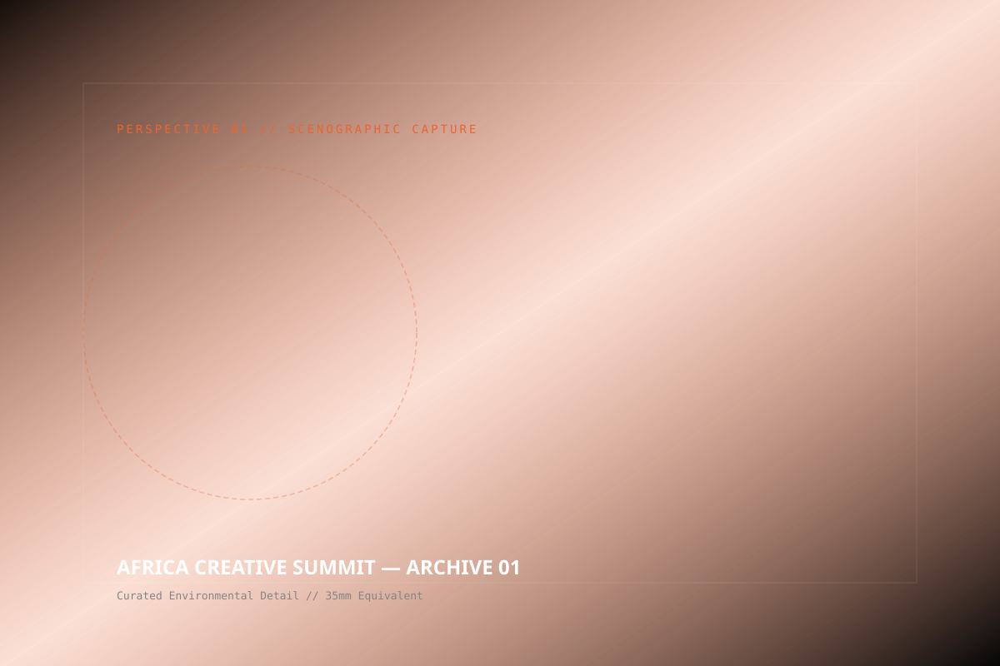
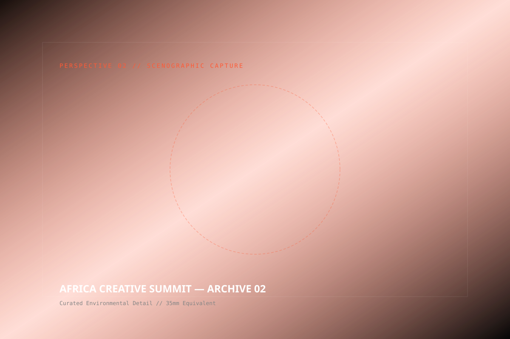
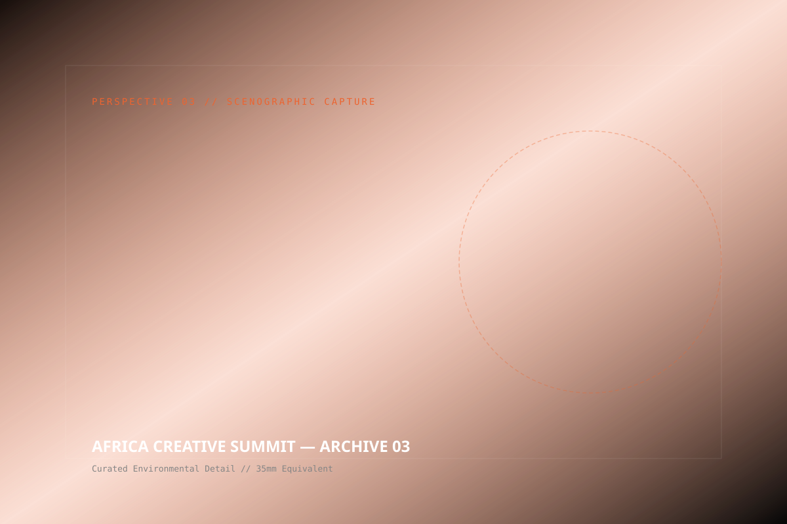

AFRICA
CREATIVE
SUMMIT
THE CHALLENGE
How do you convene 54 nations of creative thought leaders without falling into the stale tropes of international development summits? The client required an experiential architecture that broke completely free of sterile banquet halls, monotonous podium speeches, and impersonal auditoriums.
The challenge was to design a spatial, auditory, and experiential ecosystem that felt profoundly African, technologically unprecedented, and culturally reverent — celebrating continental creative agency at monumental scale.
THE SOLUTION
We engineered the 'Living Agora' — an organic spatial masterplan inspired by indigenous Ethiopian circular gathering traditions. Rather than a unilateral stage, we suspended a 28-meter kinetic ring array above a 360-degree central circular amphitheater.
By wrapping the space in acoustically tuned regional hand-loomed textiles and low-latency spatial audio, every attendee felt intimately connected to the speaker, regardless of distance. The perimeter transitioned into responsive digital art pavilions showcasing generative works by 30 African creative technologists.
OUR APPROACH
Strategy
Mapping cultural delegates and designing multi-sensory journey touchpoints across three distinct daytime and evening modes.
Concept
The 'Living Agora' — an architectural paradigm where live dialogue, generative digital art, and musical performance collide.
Design
Custom 28-meter kinetic ring array, woven tactile textiles from regional artisans, and low-latency multilingual spatial audio.
Production
14-day on-site fabrication with over 320 local artisans, structural engineers, and AV technicians working synchronously.
Experience
Synchronized dawn ceremonial openings, holographic keynote transitions, and twilight cultural banquets.
Content
Cinematic live broadcast captured in 4K HDR across 16 synchronized robotic cranes, reaching 1.2M global viewers.
CREATIVE ARCHITECTS


THE AUDIENCE IMMERSION
As delegates entered through a compressed, incense-suffused corridor of hand-spun raw Ethiopian cotton, the space suddenly expanded into the colossal 360-degree Agora. The transitions were seamless: morning cultural meditations transitioned into high-voltage economic debates, dissolving into nocturnal choral soundscapes.

SCENOGRAPHIC ARCHIVE



“The Africa Creative Summit did not merely host an event; it inaugurated a historical precedent for how our continent gathers, creates, and commands the global stage.”